张守哲：《西游记》中的国际关系
《西游记》中的国际关系是怎样的？这是个有趣的话题。本文采用了“比拟”手法，结合世界历史与国际关系的相关典故，辅助分析这部伟大名著中所蕴含的国际关系喻意。
一、天庭vs西天：＂佛道共治＂下的两极格局
“天庭”和“西天”是《西游记》中最重要的两大集团。其余如凡间的东土大唐、取经路上的诸国以及沿途盘踞的妖怪们则可视为介于这两大集团之间的“中间地带”。
按照《西游记》的界定，书中最高级的势力有五个，也就是孙悟空掌管蟠桃园时，众位仙女提到的“五方五老”：东方的崇恩圣帝及十洲三岛的仙翁、西天的佛老菩萨圣僧罗汉、南方南极观音、北方的北极玄灵、中央的黄极黄角大仙。
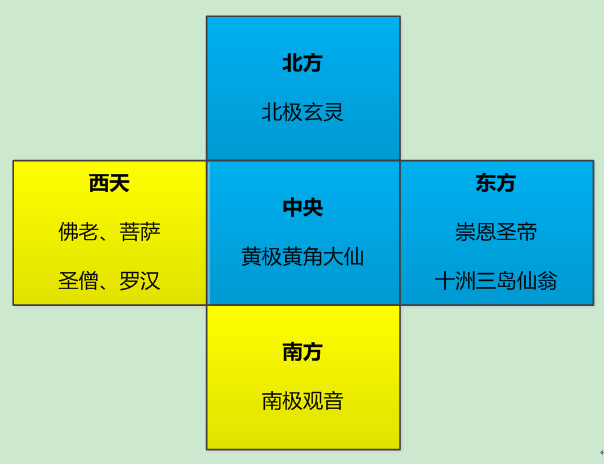
西游记“五方五老”势力分布图
从“五方五老”的分布来看，东方、北方和中央属于天庭(道教)的势力范围，西方和南方则属于西天(佛教)的势力范围。由此可见，在佛、道力量对比中，天庭(道教)略为占优——“五分天下有其三”，西天(佛教)的势力稍逊——“五分天下有其二”。不过，需要注意的是，天庭势力虽大但联系比较松散，西天势力虽逊之但集权程度更高。
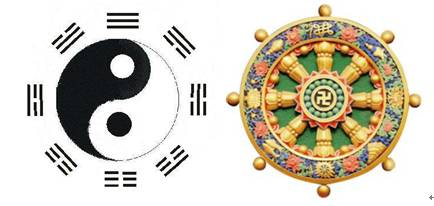
道教的“太极”与佛教的“法轮”
这有点像冷战时期的美苏两大超级大国。以美国为首的西方集团势力强但较为分散、以苏联为首的东方集团势力虽弱但集权程度更高。
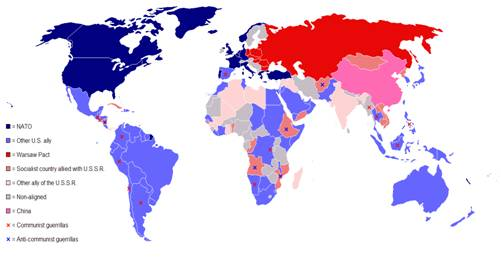
冷战期间的美苏两极势力分布图
另外，与美苏相似的是，天庭与西天之间也存在着意识形态的分野——天庭信奉的是道教，西天则信奉佛教。

西方自由主义 PK 东方专制主义
不过，简单用美苏两极格局比拟西游记中的佛道关系，似乎仍有难以解释之处：书中的西天与天庭并不像现实里的美苏之间那么剑拔弩张、水火不容。事实上，天庭与西天之间也有合作的一面。而且，西天最高领导如来是听从天庭领袖玉帝的调遣的。玉帝在请如来降服大闹天宫的孙悟空时用的词是“传旨”，如来也是“闻诏”承大天尊“宣命”。这说明佛教的如来佛祖名义上要听从道教的玉帝。这一点就不像美苏了——人家可是平起平坐呢。
依笔者愚见，西天与天庭更像“神圣罗马帝国”或“德意志邦联”体系下的普鲁士与奥地利。两者虽同为德意志的并世双雄，但由于奥地利国王也兼任神圣罗马帝国的皇帝或德意志邦联的元首，所以普奥之间就有了这种名义上的等级关系。
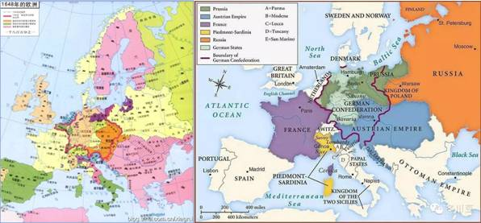
“神圣罗马帝国”和“德意志邦联”体系下的“普奥双雄”
当然，这也就是名义上而已。从1740-1748年的西里西亚战争到1866年的普奥战争，两国还不是照打不误？比较有意思的是，由多民族构成的奥地利帝国有点像天庭——势力大而组织松散，由单一民族构成的普鲁士王国有点像西天——势力虽逊但集权程度高。
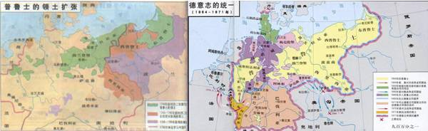
普奥争雄：从西里西亚战争(1740-1748)到普奥战争(1866)

奥地利特蕾莎女皇(1740-1780在位) vs普鲁士腓特烈大帝(1740-1786在位)
二、＂在竞争中合作＂的国际关系
从国际关系来看，天庭与西天这两个“超级大国”既有竞争的一面，也有合作的一面。
首先，从竞争方面来看，双方存在着明显的对峙。按照书中的描述，天庭镇守南方的本来是火德星君。但后来随着观音把掌握“三昧真火”和“炼丹”等道家不传秘笈的红孩儿和熊罴怪强行拉入南海佛教阵营之后，为抗衡实力大增的观音南海山头，天庭不得不把其最厉害的“剿总”——北方的真武大帝调来兼领南方。这才有了猴哥借皂雕旗遮天时，是去北天门求助的真武大帝，而到了“小雷音”那一回，当猴哥再次求见时候，真武大帝已经被玉帝调往南方、住在南部瞻洲的武当山了。
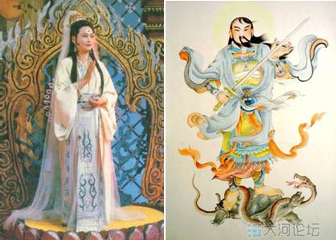
谁与争锋——观音菩萨 PK 真武大帝
这有点像三国时期，面对蜀汉诸葛亮北伐中原屡屡攻城略地的咄咄攻势时，曹魏方面不得不起用司马懿以抗衡之。
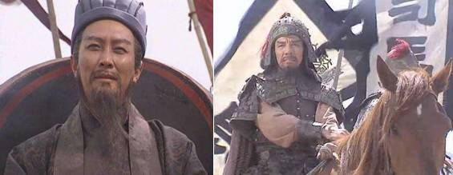
谁与争锋——诸葛亮 PK 司马懿
也有点像上个世纪60年代的古巴导弹危机。为了对付美国佬在土耳其部署导弹，苏联毛熊也把导弹部署到美国的后院古巴——“往美国人的裤子里塞一只刺猬”。当然，古巴导弹危机的最后结果是，双方分别从古巴和土耳其运回各自的“刺猬”，只不过一个是公开进行、一个是秘密进行罢了。
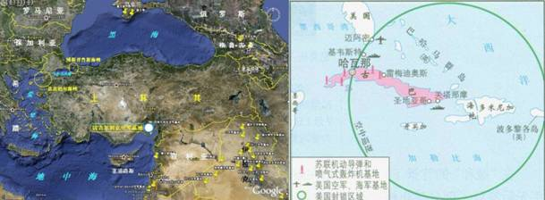
谁与争锋——美军向土耳其部署导弹 PK 苏联向古巴部署导弹
作为竞争对手，天庭与西天也在相互挑拨离间。
按照往年惯例，天庭召开蟠桃会要邀请“五方五老”，而猴子大闹天宫的这届显然只邀请了“五老”中的南方南极观音，并未邀请西天的佛祖与会。这种做法显然是用了陈平离间项羽、范增的故智。《史记.陈丞相世家》记载，项羽派使者来见刘邦时，刘邦先用精致的餐具和美食，隆重的招待，然后又故作震惊地对使者说：【我还以为你是亚父范增的使者呢，原来你是项羽的使者！】随即改用粗茶淡饭招待。楚国使者回见项羽，诉说出使过程，项羽立即怀疑范增通敌。
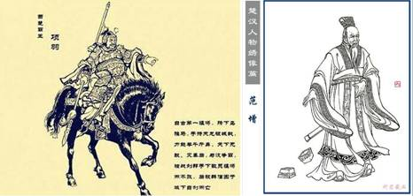
项羽与范增
另外，天庭将南海观音与西天并列为“五方五老”，除了承认观音山头的实力之外，还兼具挑拨离间的意味。事实上，根据猴哥提到的不同妖精归不同仙佛管的说法：【若是天魔，解与玉帝；若是土魔，解与土府。西方的归佛，东方的归圣。北方的解与真武，南方的解与火德。是蛟精解与海主，是鬼祟解与阎王】。号称名列五方五老的观音，是唯一没有对所在地域享有管辖权的仙佛。或者说，天庭只给了她一个虚名，希望通过抬高她的身价，制造西天的内部分裂。这样的例子在现实生活中并不罕见，例如北洋军阀内部本来没有直系、皖系之分。此说是由当时不服从北洋政府的南方媒体首次提出。然而此说一经出现，立即就被北洋将领们所接受，纷纷主动站队，进入相应的派系，从而加速了北洋系的彻底分裂。
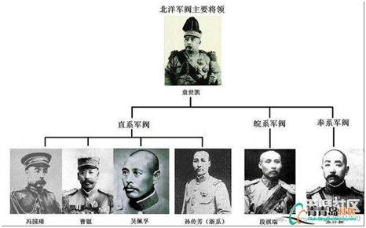
北洋军阀世系表
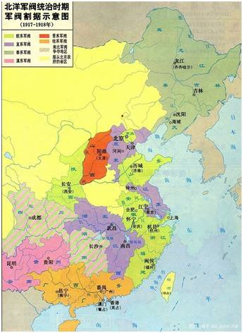
北洋军阀各系地图
来而不往非礼也，佛教方面的观音也在挑拨天庭内部的矛盾。为了制服大闹天宫的孙猴子，观音先是建议玉帝调遣一直与其不和睦的二郎神杨戬前去围剿。待胜利在望之际，“忽悠”太上老君动手用金钢琢将猴子打翻在地，分了二郎神的功劳，使得小杨负气而去，从而大大加深了张玉皇、杨二郎这对天庭第一家庭的内部裂痕。
二郎神、太上老君
当然，除了针锋相对的竞争，天庭与西天还是有合作滴。
一方面，双方曾互派人员到对方单位任职。像佛教的毗蓝婆菩萨之子昴日鸡就在天庭做星官。天庭的托塔李天王，其长子金吒在如来手下做护法，次子木叉在观音座下当徒弟，三子哪吒与其父李靖本有一段剔骨还父的仇恨，正是西天佛祖赐给李靖玲珑宝塔，通过让莲花化身的哪吒认塔作父、化解父子矛盾。另外，幽冥地府同时受西天和天庭的双重领导：地府的名义最高领导人是佛教出身的地藏王菩萨，但地藏王的负责对象是玉帝。猴哥在地狱强行注销了自己和全部猴类的户口档案后，自称【贫僧】的地藏王，却是向玉帝递交了对猴哥的诉状。而且书中最后一回的菩萨名单中没有地藏王，可见地藏王虽是和尚，却进入了天庭的正式编制。还有，西天的大Party——盂兰盆会，曾邀请道教的镇元子等人；天庭的大Party——蟠桃会，同样邀请西天、南海众佛爷菩萨与会。
哪吒用剑架住李天王(四探无底洞一回)
除了相互任职，在“扫黑除恶”方面，双方最有“共同语言”。这方面，双方有着多次“联合执法”的愉快经历。为了镇压大闹天宫的孙悟空，玉帝就请了西天的如来帮忙收伏；后来在取经路上，来自天庭的托塔李天王并哪吒三太子与来自西天的四大金刚共同围剿了取经路上最大的黑恶势力——牛魔王。
男扮女装出逃的奥地利首相梅特涅 vs 匈牙利革命诗人裴多菲
这是不是有点像维也纳会议后，俄奥普三国结成“神圣同盟”，共同镇压欧洲革命的节奏？当1848年奥地利帝国内部的匈牙利发生了如火如荼的独立革命时，身为“欧洲宪兵”的沙皇俄国立即出兵14万，帮助扑灭革命烈火。
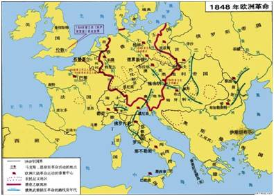
“欧洲宪兵”沙俄助奥镇压匈牙利革命
若一言蔽之，天庭与西天的关系可以概括为——“在竞争中合作”。如来佛祖通过“降猴安天”发起“取经工程”，正是这种国际关系的集中体现。
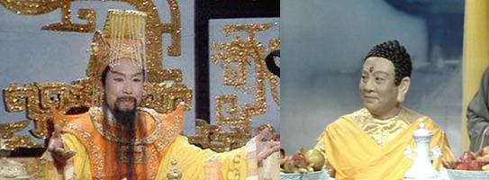
玉皇大帝 vs 如来佛祖
孙悟空大闹天宫、搅乱蟠桃盛会，十万天兵天将拿他不住，玉帝不得已派人请西天如来佛祖出面降服。如来用计制敌，一出场就将猴子“指压五行山”下，扬名立万于天庭。天庭随后召开了答谢如来的“安天大会”。利用这次难得的历史契机，如来得以顺利发起“取经工程”，将大乘佛法传播到东土大唐，实现势力东扩，同时将“简在帝心”的猴哥纳入己方阵营。
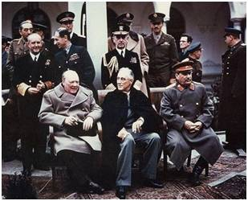
无奈的蒋公&有求于苏的罗斯福 vs 志得意满的斯大林
历史上与之相似的情形莫过于1945年的雅尔塔会议。作为盟国领袖的罗斯福，顾虑到国军战力低下(1944年豫湘桂战役一溃千里)以及减少美军登陆日本本土可能的巨大伤亡(参照硫磺岛战役和冲绳岛战役)，不得已邀请苏联参加对日作战。斯大林趁机提出了所谓的“雅尔塔秘密协定”。在对日作战中，苏军仅仅用了短短17天和付出1万人伤亡的微小代价就获得到了几乎可与欧洲战场媲美的胜利果实(除了未占领日本本土)，可谓是一本万利。
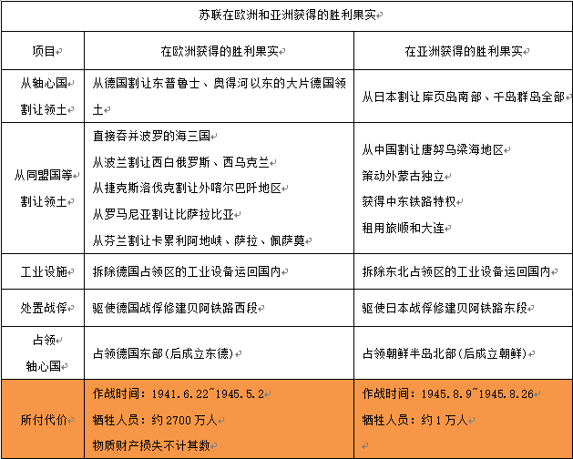
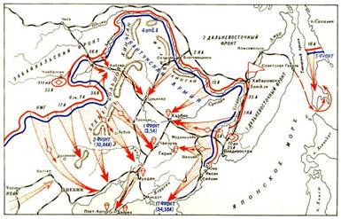
八月风暴行动(1945.8.9~8.26)
三、两极的“中间地带”——取经路上的诸国与妖怪们
西游记中，除了天庭与西天这两大超级强权，还存在着凡间国家和妖怪们，他们大多分布于取经路的沿途。这些可以视作佛道两极间的“中间地带”。
1. 取经路上的诸国——＂一边倒＂还是＂间于齐楚＂？
从东土大唐到西天灵山，取经团一共经过十多个国家和地区。作为介于佛道两大强权之间的中间缓冲地带，这些小国必须考虑自己的外交倾向，稍有不慎就会引来大国干涉(不管是来自美国的单边主义还是来自苏联的大国沙文主义)。例如，乌鸡国国王曾羞辱过文殊菩萨，西天就派人将国王浸泡井中三年；凤仙郡郡主不敬玉皇，天庭就罚该郡大旱三年，等等。
作为取经路上的重要一站——灭法国，本来位于西天势力范围的西牛贺洲，国王却执行崇道抑佛的“一边倒”外交战略。到第八十四回，取经团行至灭法国时，观音和红孩儿分别化身老太婆和小孩子，向取经团通风报信“灭法国国王正在搞宗教迫害”。所以取经团到后，孙悟空就干净利落地除掉了三个国师。灭法国今后的外交战略也必须改变。最后，连平素好战斗狠的猴哥都对灭法国王说：“你以后既要崇道、也要尊佛”。用现在的话说，其实就是他从“一边倒”转为“芬兰化”。毕竟，在对方的势力范围内搞敌对活动可不是什么好玩的。
对比现实，属于介于俄罗斯和西方之间的波罗的海沿岸国家，历史上常常受到俄国的侵略。独立后的爱沙尼亚、拉脱维亚和立陶宛三国执行了向西方一边倒的政策——坚决加入欧盟和北约、跟毛熊死磕。可问题来了，一旦将来东西方开战，作为前线的三小国肯定是炮灰的命，这对他们的国运可不是一件好事。
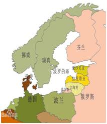
波罗的海三国和芬兰的地缘位置
相比之下，北面的芬兰就圆滑多了。苏芬战争和继续战争的历史经验与教训让其与毛熊达成了和解，即“芬兰化”：芬兰总理的上任要得到苏联暗中首肯，且境内不得驻扎美国北约及西欧军事力量。不过芬兰同时也作为苏联同西北欧国家经济技术交流的重要桥梁，这反而促进了芬兰自身的发展。
万寿山五庄观的镇元子更聪明——人家想走“间于齐楚”的路线。
从地理位置上看，万寿山五庄观是位于南瞻部洲通往西牛贺洲的必经之路上的战略要地，也是天庭驻西天大使馆——灵山脚下的玉真观之外，最西的道教据点，是道教世界向佛教世界渗透的桥头堡、最前线。西天肯定想拔掉这颗钉子或突出部。从镇元子的角度说，如果西天真的与道教世界翻脸，他这小小桥头堡，肯定是第一个覆灭的。镇元子对自己的险恶处境心知肚明，于是想走“间于齐楚”的路线。他对金蝉子(唐僧)当年在“盂兰盆会”上的敬茶，给予热情回报，为此拿出了两个人参果投桃报李。
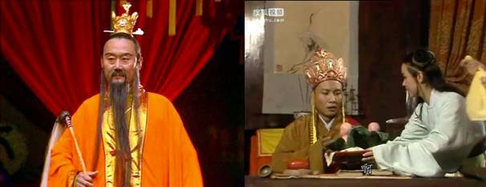
镇元子“投桃报李”
然而，就这么一个“间于齐楚”的小小举动，还是被道教的大佬——元始天尊暗中破坏了。道教最高精神领袖——玉清元始天尊，根本不给镇元子与唐僧见面的机会，便以听课为名，急吼吼地召镇元子上天。当看到清风明月将事情搞砸之后，才痛快地允许镇元子回家料理。镇元子最后不得已，忍痛拿出十个人参果，与医活果树的观音一众人等分吃，还与猴哥结拜。
“间于齐楚”的典范——冷战中的南斯拉夫
这跟冷战期间的南斯拉夫有其曲同工之妙。在东西方冷战高峰期间，位于“中间地带”的南斯拉夫偏偏走了一条“不结盟”的路线。左右逢源，让东西方集团都来巴结他。1980年铁托的超豪华葬礼更是齐聚了当时的东西方主要领导人。当然，一待铁幕退去，南斯拉夫的政治价值也就随之大大消散了。
铁托的豪华葬礼
2. 取经路上的妖怪们——地方军阀的下场
如果说，取经路上的诸国是两极下的“中间地带”，那么，沿途的妖怪们则可以看作是地方军阀。
为什么这样说呢？如来发起的取经工程，很大程度上是个“引蛇出洞”的阳谋，其目的是为了——削藩。先让唐僧、猴哥为首的取经团沿着取经路路线走一遭，同时释放出“吃了唐僧肉可以长生不老”的传言，引诱沿途的妖怪们前仆后继地飞蛾扑火，正好可收“引蛇出洞聚而歼之”之效。通过“假途灭虢”之计，将金翅大鹏雕、牛魔王等重要的格斗高手强行拉入己方阵营，将工作中开小差的公职人员带回教育，将无甚价值且没有背景的妖怪统统消灭。通过这些削藩的举动，以大大加强中央集权。

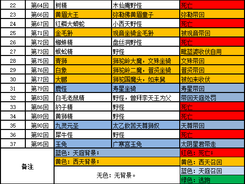
这种引蛇出洞、假途灭虢的做法，其情形有些像当年蒋公驱赶红军进入西南诸省，借机消灭湖南何健、贵州王家烈、云南龙云、四川刘湘刘文辉杨森等军阀。
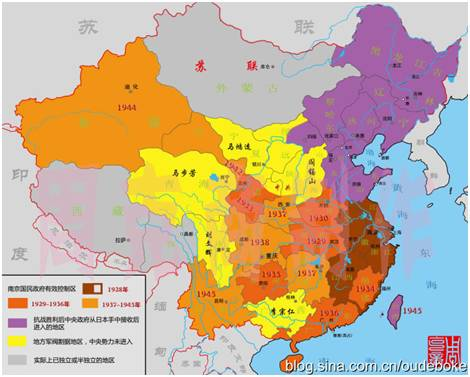
蒋公削藩记
当然，天庭方面也借“取经团”这把“刀”，除掉了多年来如鲠在喉的狮驼岭和狮驼国的三个魔头。在第七十四回，取经团刚刚踏入狮驼岭的地界，天庭系统的太白金星就急吼吼地跳出来，警告他们前方妖精不仅厉害，而且背景深厚、结交广泛：【那妖精一封书到灵山，五百阿罗都来迎接；一纸简上天宫，十一大曜个个相钦。四海龙曾与他为友，八洞仙常与他作会，十地阎君以兄弟相称，社令城隍以宾朋相爱】。从事后来看，天庭这次派太白金星来预警，用意深刻。行者谢道：【感激，感激！果然此处难行，望老星上界与玉帝说声，借些天兵帮助老孙。】金星道：【有，有，有！你只口信带去，就是十万天兵，也是有的。】这说明，天庭方面早就对狮驼集团看不顺眼了，只是碍于属于西天，不得不借取经团这把刀除之。
3. “取经团”——“代理人战争”与“新式武器的试验场”
在沿途多次降妖除魔的过程中，有不少是来自天庭或西天系统内部的妖怪。这些妖怪并不纯粹是为了吃唐僧肉，有的是奉主人之命跟取经团斗法，以测试新式武器的威力的。
例如，在“误入小雷音”一回，弥勒佛的秘书黄眉童子用金饶罩住悟空、以人种袋收伏天兵天将。在“金兜山斗法”一回，太上老君的司机青牛精携主人的金钢琢下凡，将悟空和天将们的武器以及西天罗汉的十八粒金砂一一套走。
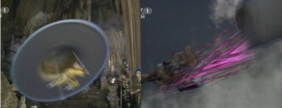
弥勒佛的金饶和人种袋
我们知道，在两极格局下，超级大国不便于直接对垒、打热战，那么就以“取经团”为标的，让秘书或司机出面，打一场“代理人战争”，以测试新式武器的威力，并寻求改进空间。取经团成为天庭和西天的新式武器试验场。
通过黄眉童子的试验，弥勒佛了解到金饶和人种袋还是很厉害的，悟空和天将诸辈对自己构不成什么威胁。不过，金饶虽能罩住悟空但可以被天庭二十八星宿中的亢金龙的角钻入，也会被悟空的金箍棒打碎，看来今后需在这方面改进。老君也通过青牛精试验了自家的至宝——金钢琢。威力确实很大，甚至如来的金砂也奈何不得。但不能套走黄河水伯的武器，将来似乎也需有针对性的改进。
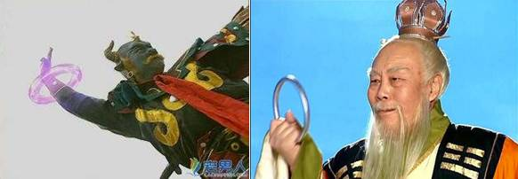
太上老君的金钢琢
这么看来，取经团有点类似于冷战时期的中东。冷战期间，中东的阿以之间先后爆发了五次中东战争。历次中东战争均成为美苏两大强权新式武器的最佳试验场。

第三和第四次中东战争
有人会问：既然佛祖的金砂被老君的金钢琢套去，是不是说明佛祖不如老君厉害？依笔者愚见，老君的金钢琢相当于海湾战争中美军的M1A1坦克，属于顶配，而佛祖的金砂则相当于伊军的T-72坦克，属于标配。标配自然打不过顶配，所以金砂才会被金钢琢套去。
作为顶配的美军M1A1坦克“暴虐”作为标配的伊军T-72坦克
四、“取经工程”的国际关系喻意
《西游记》的主题是“取经”。取经故事占了整书的87回。那么，作为西游记最重要的组成部分——取经或者说“取经工程”又有怎样的国际关系喻意呢？
1. 开拓海外市场：“取经工程” vs “一带一路”战略
如来佛祖为什么要发起“取经工程”呢？原因在于西天的大乘佛法在西牛贺洲本土市场需求存在不足，需要通过开拓海外市场以获得新的增长点。
我们从“天竺国假公主招婿”那一回可以窥知一二。通过“假公主招婿”，可以看出，位于西牛贺洲的天竺国国王其实并不敬佛，不然就不会允许自己的女儿招和尚做驸马了。这从他和唐僧吟诗作赋却不谈佛理也可以看出。
另外，根据如来的讲述，在西牛贺洲舍卫国赵长者家念了一遍“三藏真经”，却只收到了“三斗三升米粒黄金”的费用。如来还认为是贱卖了。如果要进一步扩大利润空间，就要开拓新的市场、扩大新的信众。如来遍览天下四大部洲，如果能把佛经传到当时的中华上邦——东土大唐，那么佛经的利润至少会翻倍增长。
既然是内需不足，那么就需要寻找海外投资点。“取经工程”沿着这个思路就发起了（具体过程可参见笔者的《西天取经共同基金是怎么发起成立的》一文）。
通过开拓海外市场解决内需不足的瓶颈，这恰好跟近年来实施的“一带一路”战略相似。同样是海外投资，只不过一个向东、一个向西罢了。
需要说明的是，作为海外投资战略的执行工具——取经团或亚投行，它们都是国有企业或者说有国资背景的企业。所以，如果去分析上述企业的盈利与否就不合适了——因为这没有意义，而是探究它们有没有贯彻落实最高领导的战略意图。
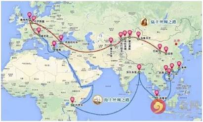
一带一路
2. 沿途扫黑除恶：取经团 vs 欧洲中世纪三大骑士团
“取经团”成立之后，其主要的任务却是沿途扫除妖魔鬼怪、促使不信佛的国家转信佛教，这跟欧洲中世纪的“十字军东征”相似。“取经团”也正好对应了当时的三大骑士团——圣殿、医院、条顿骑士团。
事实上，取经团的成立和十字军的发起也有几分相似。
取经团的成立，是观音巧妙策划的结果。观音首先通过参加唐王举办的首届水陆大会，现场宣讲大乘佛法的产品优势。并借玄奘不懂大乘佛法之机，指出目前市面上只有西天灵山新研发出来的“大乘佛法”可以实现“度亡者升天”的功能。在一旁听课的唐太宗立刻欣喜若狂地问道：【你那大乘佛法在于何处？】观音指出：【在西天天竺国大雷音寺我佛如来处】。于是，唐太宗请观音登台做法。观音【便飞上高台，遂踏祥云，直至九霄，现出原身本像】。真身都现出来，唐太宗能不相信吗?！观音正是用她个人的品牌形象为西天大乘佛法做了一次形象代言。从而促使唐太宗下定决心，将“西天取经”正式列入大唐的“十三五”规划【且收胜会，待我差人取得大乘经来，再秉丹诚，重修善果】。
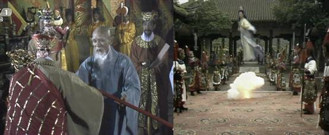
观音显像化金蝉
同样地，当收到来自东方拜占庭帝国皇帝的求救信时，罗马教皇乌尔班二世很快就以“西方元首”的身份，答应了东方帝国皇帝的请求。公元1095年，在法国克莱芒召开了大公会议。乌尔班二世在众多与会者面前发表了激昂的演说，号召大家解放被穆斯林迫害的基督徒。他的演说获得了在场所有听众排山倒海般的欢呼称赞。无数次“Deuslo vult”（主的旨意）的口号打断了演说，数千人当场将十字架缝在衣服上，表示参加东征作战的决心。教皇乌尔班二世许诺巨大：每个参加十字军的人都不再需要救赎；若有人在与穆斯林的战斗中牺牲，其绝对会升入美妙的天堂；另外，若东方的远征获得胜利，巴勒斯坦、叙利亚将会有无数“流着牛奶和蜜”的土地，迎接十字军新主人。在罗马教皇的号召下，欧洲后来成立了条顿、医院、圣殿三大骑士团，奔赴东征圣城之途。
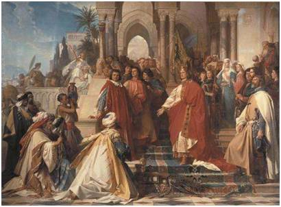
教皇乌尔班二世在克莱芒宗教会议上的演说
取经团在沿途的主要任务就是要扫除妖魔鬼怪、促使不信佛的国家转信佛教，取经只是个幌子。即：有效运用“假途灭虢”之计，以取经之名、行剿除妖怪之实。这就有点像十字军东征，名义上是为了攻打异教徒、夺取圣城耶路撒冷，实际上则是为了抢夺东方的地盘、在东方建立基督教国家(安条克公国、拉丁帝国等等)。为此而成立的欧洲中世纪三大骑士团——圣殿、医院、条顿骑士团，是不是有点儿类似于取经团？
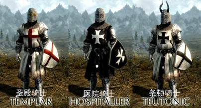
欧洲三大骑士团
电影《天国王朝》讲述了这段历史
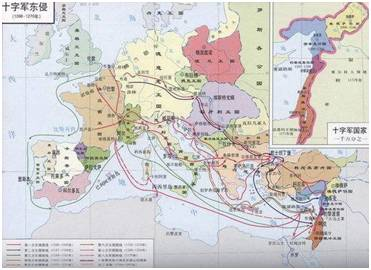
十字军东征及其建立的基督教国家
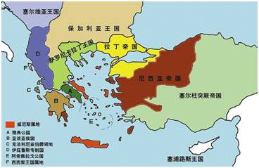
十字军建立的拉丁帝国(公元1204～1261年)
3. 最终的影响意义：取经 vs 长征
当然，从“取经工程”的最终影响来看，从南赡部洲东土大唐到西牛贺洲西天灵山大雷音寺一路十万八千里的漫漫取经路程，唐僧师徒一路降妖除魔，沿途弘扬佛法。在他们的影响下，整个西牛贺洲和南赡部洲都从毁佛、谤佛发展到信佛、拜佛，从而极大地扩大了西天的影响力。作为佛教的最高领导人，如来正是利用唐僧取经，做了一次最好的推广和销售活动。无论是算政治账还是经济账，对西天都非常合算，具有“伟大的历史意义”。
套用一段现代的话，取经是西天历史纪录上的第一次，取经是宣言书，取经是宣传队，取经是播种机；通过取经并配合严打，抢救了一批擅离岗位的国家公职人员，教育了一批不明真相的人民群众，惩罚了一批罪大恶极的反革命和黑社会惯犯；通过取经，极大地弘扬了沿途的人民群众对佛教的向往之情；通过取经，进一步壮大了佛教的信徒，让佛教的香火烧的更加兴旺。
这段对“取经工程”伟大意义的描述，恰恰跟长征的伟大意义有异曲同工之妙。多说一句，如果把长征比作取经大业，那么里面的人物似乎也可以对应一二：
(1)唐僧=张闻天(洛浦)+王稼祥+博古(秦邦宪)+周恩来
(2)孙悟空=毛润之
(3)八戒、沙僧=彭德怀、林彪
在1961年，毛写下著名诗句：“金猴奋起千钧棒，玉宇澄清万里埃。今日欢呼孙大圣，只缘妖雾又重来。”这或许是“人以群分”真实表露吧。
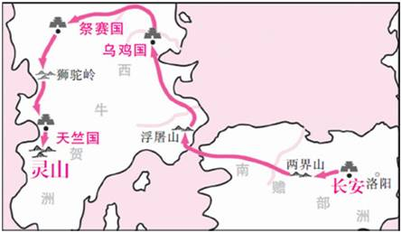
西行取经路线图

注：蓝色代表原属道教影响区域。
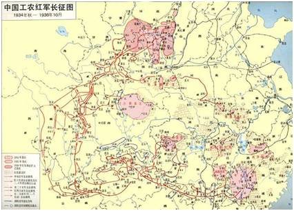

ID：sinozhuge